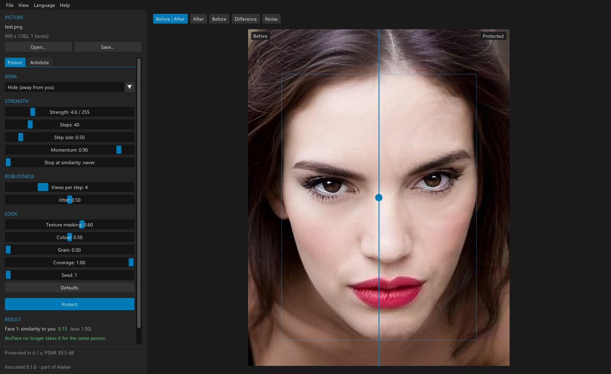
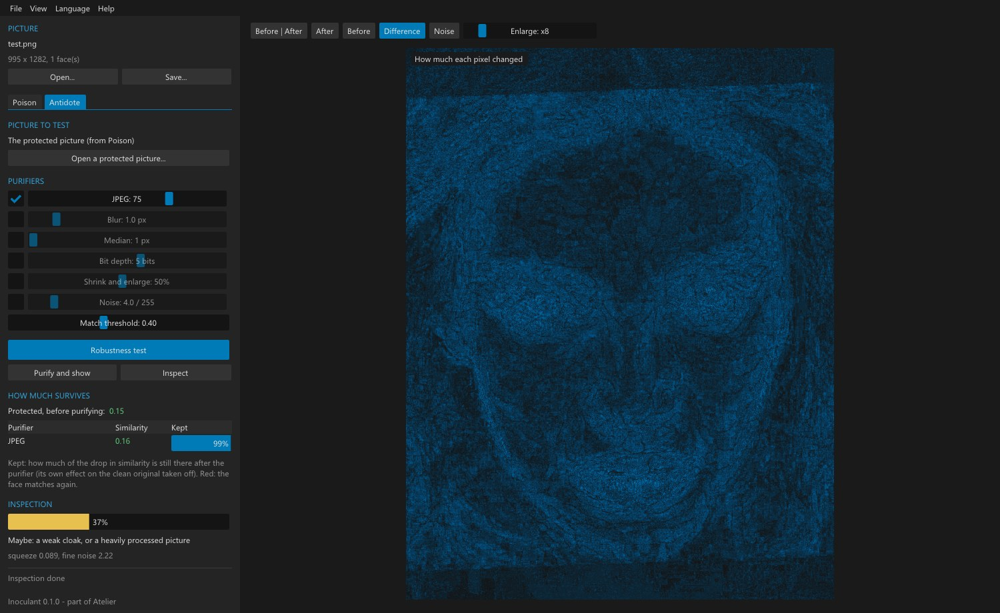

A protective tool: use it on pictures of yourself, or of people who agreed. A cloak is a speed bump, not a guarantee.
Tested
On AI-generated test faces, default settings (strength 4 of 255), on the GPU through DirectML:

The command line
inoculant-cli protect me.jpg me_protected.png inoculant-cli test me.jpg me_protected.png --all inoculant-cli inspect picture.jpg